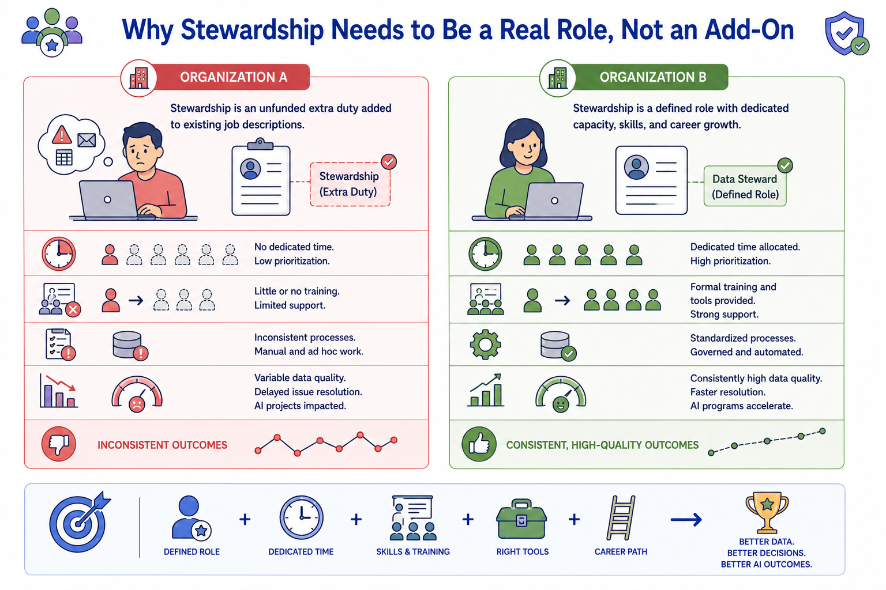
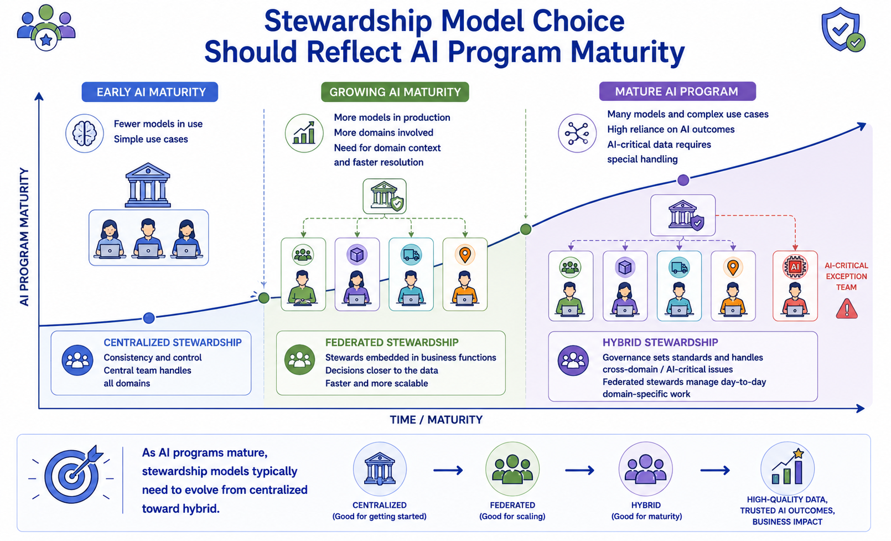
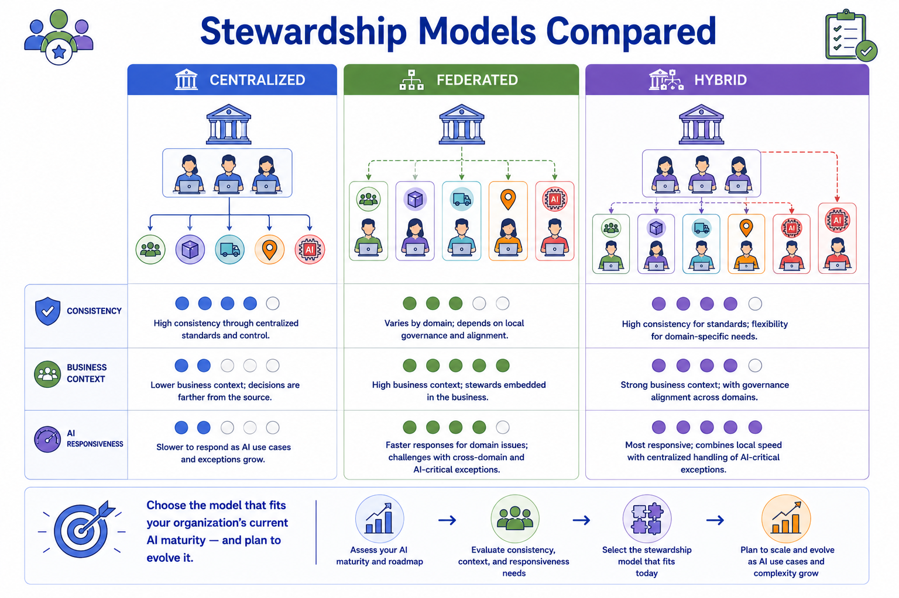

Stewardship Models
Module support notes
Stewardship as a Career Path, Not a Side Task
One of the most consistent findings across mature MDM programs is that stewardship performed as an unfunded side task to an existing job produces inconsistent results, while stewardship recognized as a defined role with allocated time and a development path produces consistently stronger outcomes.
This matters increasingly for AI programs, where the speed and accuracy of stewardship decisions directly affects how quickly AI initiatives can move from data readiness to deployment. A steward who is also trying to do their main job will deprioritize stewardship under pressure — and that deprioritization shows up as delayed AI certifications, unresolved exceptions, and degraded golden record quality.
Tip
When making the case for funded stewardship roles, connect the stewardship SLA directly to AI program timelines. If an AI initiative is waiting on domain certification before model training can begin, and certification is waiting on a steward who is managing a full-time job alongside their stewardship duties, the cost of the delay is visible and attributable. That connection is often the most persuasive argument for treating stewardship as a real role.

Choosing a Stewardship Model Based on AI Maturity
The right stewardship model is not static — it should evolve as an organization's AI program matures. Early in an AI journey, a small number of models and a centralized stewardship team are often sufficient. As the number of AI use cases grows and spans multiple business domains, the volume and domain-specific nature of exceptions typically outpaces what a centralized team can handle responsively.
This makes a shift toward federated or hybrid stewardship necessary to keep pace — putting stewardship capacity closer to the business domain, where context-specific decisions can be made faster and with greater accuracy than a central team can provide from a distance.
Warning
Organizations that keep a centralized stewardship model as their AI program scales typically see two failure modes: exception queues grow faster than the central team can clear them, and domain-specific decisions get made without the business context needed to make them correctly. Both problems degrade AI readiness over time. Plan the stewardship model evolution before the AI program outgrows the current model — not after the backlog is already critical.

No single stewardship model is right for every organization — the right choice depends on current AI maturity, with a plan to evolve as that maturity grows.
